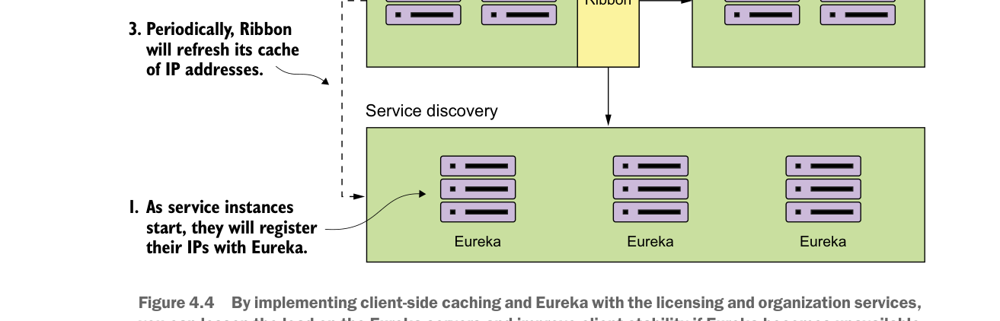

By implementing client-side caching and Eureka with the licensing and organization services, you can lessen the load on the Eureka servers and improve client stability if Eureka becomes unavailable.
In the previous two chapters, you kept your licensing service simple and included the organization name for the licenses with the license data. In this chapter, you’ll break the organization information into its own service.
When the licensing service is invoked, it will call the organization service to retrieve the organization information associated with the designated organization ID. The actual resolution of the organization service’s location will be held in a service discovery registry. For this example, you’ll register two instances of the organization service with a service discovery registry and then use client-side load balancing to look up and cache the registry in each service instance. Figure 4.4 shows this arrangement:
- As the services are bootstrapping, the licensing and organization services will also register themselves with the Eureka Service. This registration process will tell Eureka the physical location and port number of each service instance along with a service ID for the service being started.
- When the licensing service calls to the organization service, it will use the Netflix Ribbon library to provide client-slide load balancing. Ribbon will contact the Eureka service to retrieve service location information and then cache it locally.
- Periodically, the Netflix Ribbon library will ping the Eureka service and refresh its local cache of service locations.
Any new organization services instance will now be visible to the licensing service locally, while any non-healthy instances will be removed from the local cache.
Next, you’ll implement this design by setting up your Spring Cloud Eureka service.